~Inside the Company Store: ~
Demystifying Tkinter Docs
10/13/2025
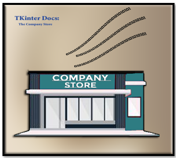
Where can I go to find the code, I need?
Microsoft will give you different websites that are dedicated to the documentation of their products. Tkinter is no different and will offer their own docs. The problem with this documentation is that if you are a new user, it can be like walking into a maze of jumbled jargon.
The Tkinter Class API Reference
Yes, The Tkinter Class API Reference is exactly what they are naming this thing. So, they are trying to mystify you straight out of the box. You can go to this website to see a list of what they have to offer.
https://tkdocs.com/pyref/index.html
But if you click on one of those links, you will be greeted with even more baffling jargon. So, what in the heck is this all supposed to mean?
When you visit the official Tkinter documentation, you’ll often see syntax like this:
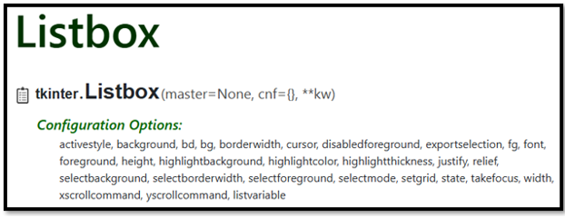
master is the parent container (like a frame or root window)
cnf is shorthand for configuration options (like color, font, etc.)
**kw allows for additional keyword arguments
“You could sort of think of master as the shelf, cnf as the label settings, and **kw as the secret drawer where extra options live.”
But just because you are looking at this technical jargon on the page, that doesn’t mean that this is what you will use to create your own projects. To tell you the truth, some of these are old terms that are not used anymore, and some of these are what is seen behind the scenes of your own code, that you never really see or work with. None the less, this is what you will be presented with, so you best be ready to be prepared to understand what this gobblety- gook is actually trying to tell you.
Understanding the Syntax
Now to decrypt what that information above is actually telling us
tkinter.Listbox(master=None, cnf={}, **kw)
The Entry widget
So, let’s start with the Entry widget, it is about the easiest. Some applications call this a textbox, but Tkinter is a bit different, it will make a very stark distintion in these text gathering apparatuses, for one-liners, it uses what is called the Entry widget, and for multilines of text…now that is where Tkinter will use the text widget to handle things.
So, let’s go shopping at the Tkinter company store for one of these things. Go to this URL below and start looking for it.
https://tkdocs.com/pyref/index.html
I found one
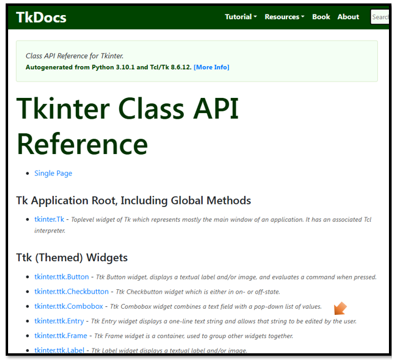Now we want to click on that tkinter.ttk.Entry link to see what we can find. Oh, another one of those pages with the syntax at the top, and a list of things that we can use underneath of it.
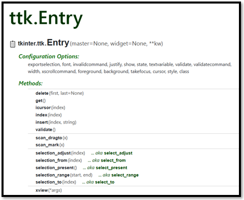Two common methods on the textbox are get and insert methods.
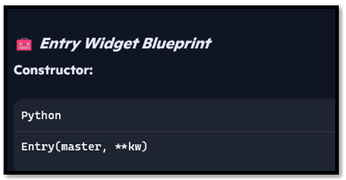What can be a master?
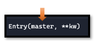The master is anything that you want to put this thing into. It can be the root, the frame, the canvas…root stands for anything that we want visible on the 1st layer of our application. You would layer other things like frame on top of that, and if you want the widget in the frame, you put it on top of the 2nd layer where your frame resides, and this frame would become your master.
What is cnf
cnf is a legacy way to pass configuration options as a dictionary. This term is rarely used directly anymore.
What is kw?
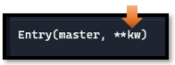The kw, stands for keyword. In Tkinter, a keyword argument is a common idea, and used when initializing widgets or configuring their properties. Keyword arguments are surrounded by parenthesis, which enables them to be passed to a function or constructor (name given when creating a widget) and is done using name=value pairs. It is a way of passing in information that an object needs. In Python, things like functions and constructors are considered first class objects.
The two stars are really a cool concept in Tkinter, and allows a function to accept any number of keywords; and they do not even need to be defined inside of the function first. So, you can go in not knowing how many of these arguments you are actually going to need, and the program will handle figuring this out for you.
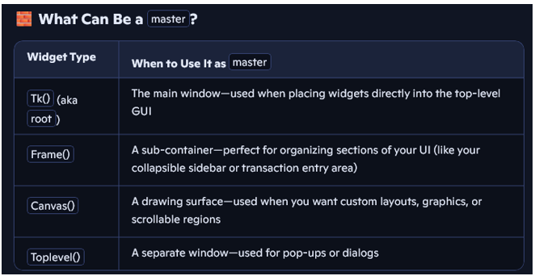
How to use it
This is the old way of doing things, when cnf was actually a thing in tkinter.
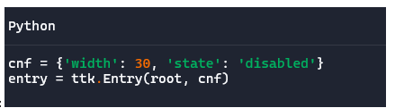This is how things are done now.
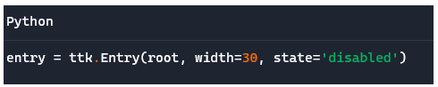
And this is how you would go about starting to write your python file, to enable you to use an entry widget in your own project.
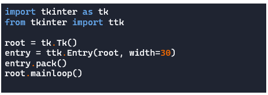
So, let’s put one of those methods into the search box at the top to see where it leads
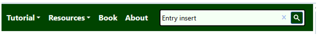 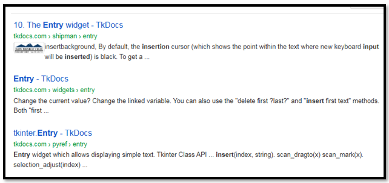
So, lets click on that first one. And we hit pay dirt. Here we can read all about this Entry widget.
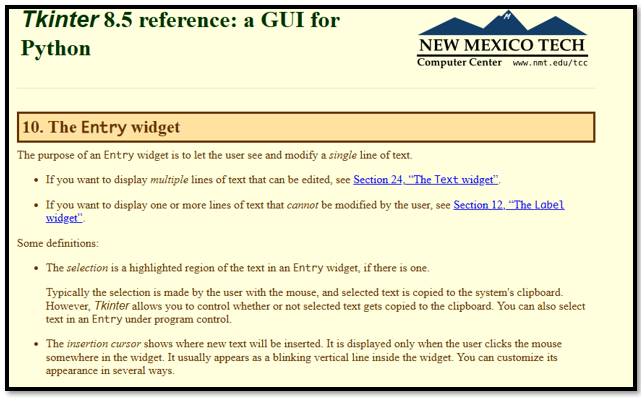Creating the file for the Entry Button
Create a new file and call it test_entry_widget.py
The Basic Skeletal Code
Start out with your start up code to create the window.
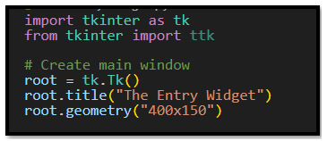import tkinter as tk
from tkinter import ttk
# Create main window
root = tk.Tk()
root.title("The Entry Widget")
root.geometry("400x150")
Close it at the bottom like this
# Run the app
root.mainloop()
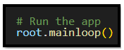
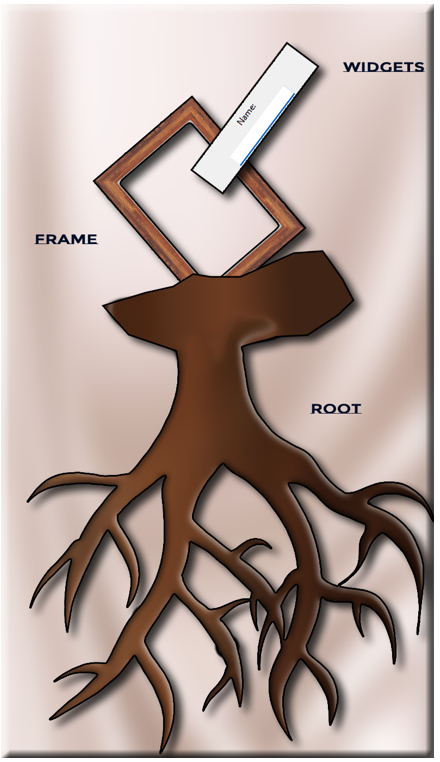
“In Tkinter, every widget grows from a root. Frames act like branches, organizing your interface. Widgets—like Entry boxes or Buttons—are the leaves your users interact with.”
The Frame
Create a Frame for every thing to go inside of. Place this at the top right after the code defining what root is. Notice our frame is on the next layer over the root, which is the base layer. We pack it so it will showup inside of the frame, with its position. Each widget needs a home. When we create a label or entry, we tell Python where to place it —inside entry_frame, which itself lives inside root.
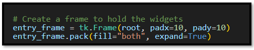
The Label and Entry
Notice first of all here, we are placing everything into the entry_frame, and not in the root which is the first layer. Also, look at the myEntry.insert line. That first number of ‘0’ represents the very first space in the Entry. So, we start typing at the beginning of the box, and not in the middle somewhere. The text after the ‘0’ is what we have in the box as our default text. This is usually for instructional purposes.
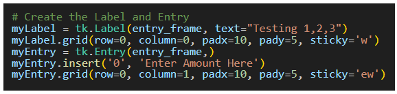
Pack, Grid and Place
There are a couple of methods that we could go about arranging widgets inside of a frame.
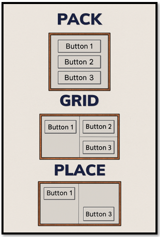This is done inside of a python file. Extention .py
PACK: Widgets are stacked vertically, aligned to the left. Think of it like stacking boxes in a column—simple and clean.
import tkinter as tk
root = tk.Tk()
root.title("Pack Example")
# Create buttons and pack them vertically
btn1 = tk.Button(root, text="Button 1")
btn1.pack(side="top", fill="x", padx=5, pady=5)
btn2 = tk.Button(root, text="Button 2")
btn2.pack(side="top", fill="x", padx=5, pady=5)
btn3 = tk.Button(root, text="Button 3")
btn3.pack(side="top", fill="x", padx=5, pady=5)
root.mainloop()
GRID: Widgets are arranged in a 2×2 matrix. This method gives you control over rows and columns, like placing tiles on a board.
import tkinter as tk
root = tk.Tk()
root.title("Grid Example")
# Create buttons and place them in a grid
btn1 = tk.Button(root, text="Button 1")
btn1.grid(row=0, column=0, padx=5, pady=5)
btn2 = tk.Button(root, text="Button 2")
btn2.grid(row=0, column=1, padx=5, pady=5)
btn3 = tk.Button(root, text="Button 3")
btn3.grid(row=1, column=0, padx=5, pady=5)
root.mainloop()
PLACE: Widgets are positioned at exact coordinates. Button 1 is top-left, Button 2 is centered, and Button 3 is bottom-right—like pinning notes on a corkboard.
import tkinter as tk
root = tk.Tk()
root.title("Place Example")
root.geometry("300x200") # Set window size for absolute positioning
# Create buttons and place them at specific coordinates
btn1 = tk.Button(root, text="Button 1")
btn1.place(x=10, y=10)
btn2 = tk.Button(root, text="Button 2")
btn2.place(x=120, y=80)
btn3 = tk.Button(root, text="Button 3")
btn3.place(x=200, y=150)
root.mainloop()
Focus
In Tkinker, we can write functions that will make the default text disappear from the box, when we start typing, or in this case (gains focus). We are using two functions here. One will handle what is done when the box gains focus, and one tells the box what to do when it loses focus.
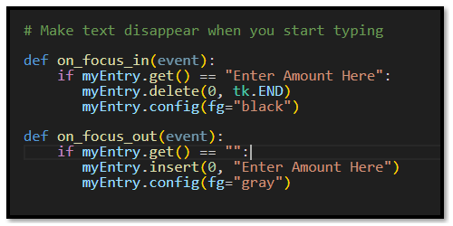
Function to Show Amount
Here we are writing a function to show the amount in the terminal when we click the button. The button will have a command keyword linked to this function, so it knows to run it when the button is clicked.
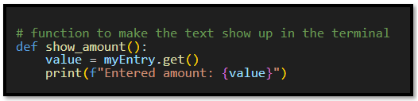The button that holds the command to show the amount, typed by the user, in the terminal.
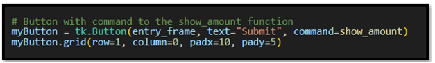
Binding the Focus Event
The event needs to be bound to an object in the frame. In this case we want to use the focus event with our Entry box, so it needs to be bound to it, and when the even occurs, (in our case it is the Entry box gaining or losing focus),It is then that the functions that are written for the event are automatically run.
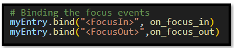
The only thing left is the code that runs the entire app at the bottom of the code.
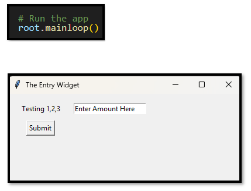
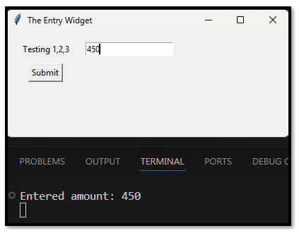
The Code for the Entry Widget
import tkinter as tk
from tkinter import ttk
# Create main window
root = tk.Tk()
root.title("The Entry Widget")
root.geometry("400x150")
# Create a frame to hold the widgets
entry_frame = tk.Frame(root, padx=10, pady=10)
entry_frame.pack(fill="both", expand=True)
# Create the Label and Entry
myLabel = tk.Label(entry_frame, text="Testing 1,2,3")
myLabel.grid(row=0, column=0, padx=10, pady=5, sticky='w')
myEntry = tk.Entry(entry_frame,)
myEntry.insert('0', 'Enter Amount Here')
myEntry.grid(row=0, column=1, padx=10, pady=5, sticky='ew')
# Make text disappear when you start typing
def on_focus_in(event):
if myEntry.get() == "Enter Amount Here":
myEntry.delete(0, tk.END)
myEntry.config(fg="black")
def on_focus_out(event):
if myEntry.get() == "":
myEntry.insert(0, "Enter Amount Here")
myEntry.config(fg="gray")
# function to make the text show up in the terminal
def show_amount():
value = myEntry.get()
print(f"Entered amount: {value}")
# Button with command to the show_amount function
myButton = tk.Button(entry_frame, text="Submit", command=show_amount)
myButton.grid(row=1, column=0, padx=10, pady=5)
# Binding the focus events
myEntry.bind("<FocusIn>", on_focus_in)
myEntry.bind("<FocusOut>",on_focus_out)
# Run the app
root.mainloop()
Moving this code into the Main File
You could use this entire code as is, or remove the scaffling code around it, and just take this code and move it into your own project.
Remove Scaffling
So, remove or comment out this code at the top
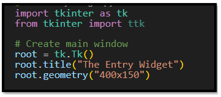
Then we also need to remove the last lines of the file, because that will run the program, and we also have that line in the main file. So, leaving it in would be duplication, could at the worst crash your program and at the least be extremely poor code writing.
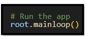Decide where to place it
The next part is to decide where we actually want this code to live. Where do we need a label, entry, and button?
What Python file does it reside in? Are you needing this actually as part of the root, or maybe you need it at a higher layer level. Maybe in a Frame, or inside of a canvas.
Replace root with the correct container
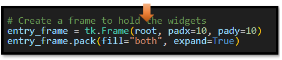
Place holder behavior
If you used any place holder behavior in your test, you will need to scan through the code and make sure you replace that.
Make sure your Project behavior is updated from Testing Behavior
In testing many times you want everything printed out to the terminal, so that you can make simple tests, but in real world projects that would never do; your user does not have access to your terminal, and would never see it. So,, now would be a good time to make that change so that instead of the feed back text, only being presented in the terminal where a developer will see it, now would be a good time to move that behavior of printing out the text to a label, or even triggering a database event.
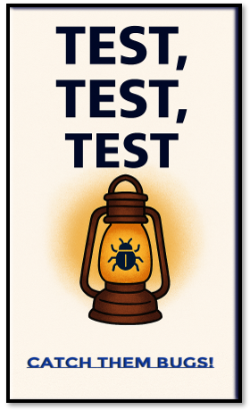
Test, Test, Test
Before your product goes out, you want to test for every scenario.
- Layout, does it look right.
- Behavior, does the widget still work as expected after moving it into your actual project.
- Spellings